Contact
Studio: PO Box 83037, Portland, OR 97283info@sethtane.com
Artist's Statement
How did I get here? Biking in from the Island at thirteen to the last stop on the F train to lurk Canal Street and the Village. Bound for the west coast as soon as possible... Trains, trucks, boats, ships, cranes & crawlers. Rigging, salvage, towing, steel, timber, rock & dirt... Cities, crowds and faces. All the while, photographing & painting like mad to celebrate it all. More to follow...October 2012
Portland, Oregon
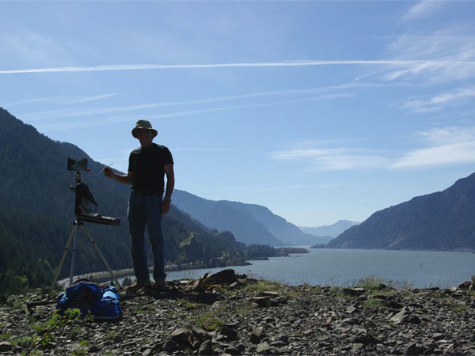
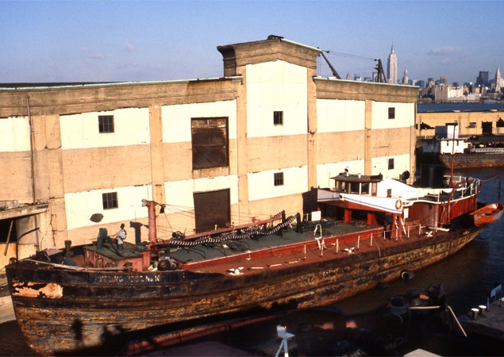

 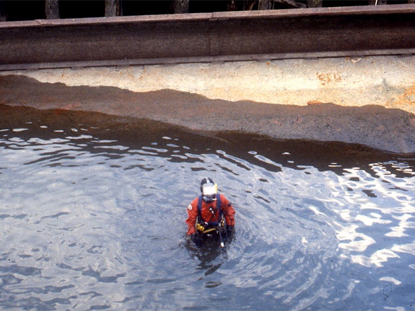
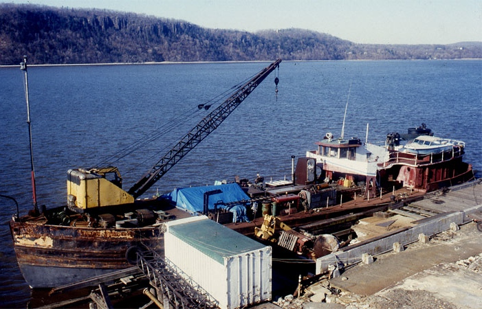
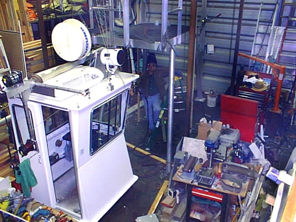
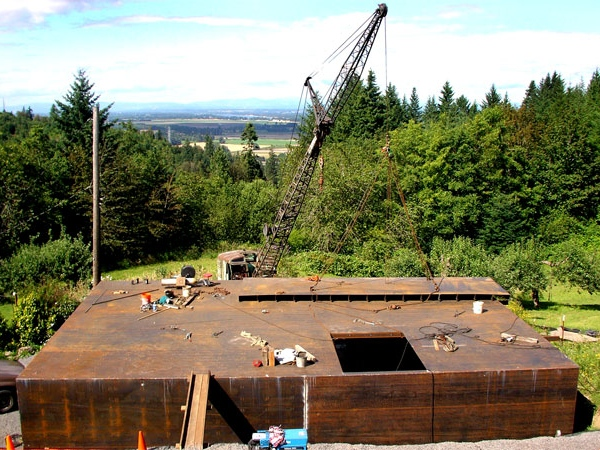
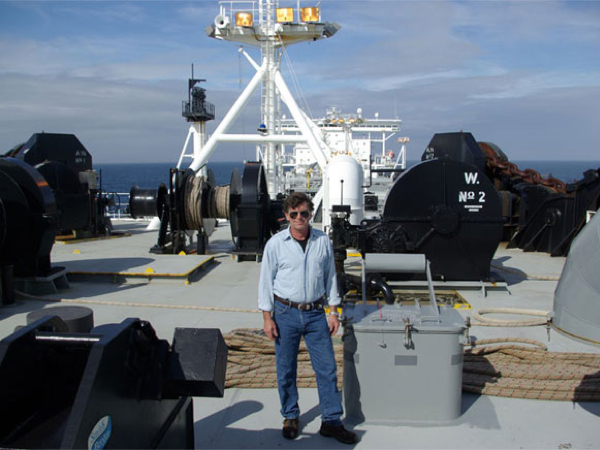
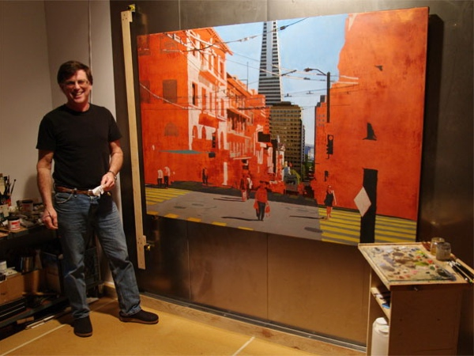
Floating Bales at Industry & Art Portland, OR 2012
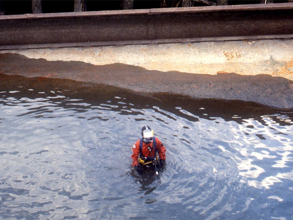
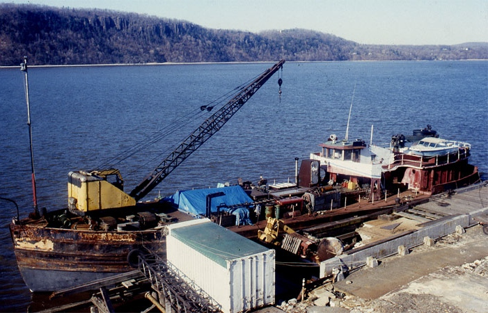
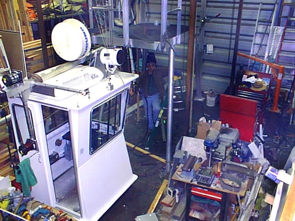
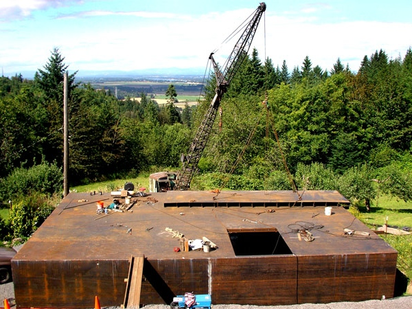
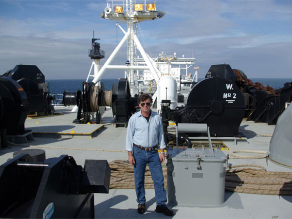
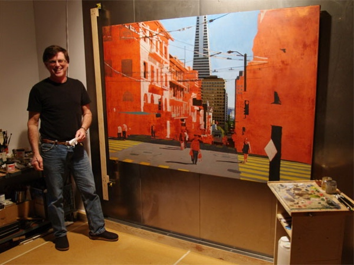
Floating Bales at Industry & Art Portland, OR 2012
(photo Casey Parks)"/>
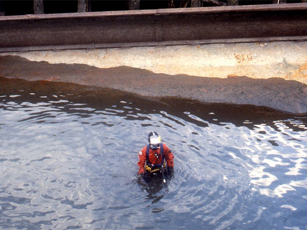
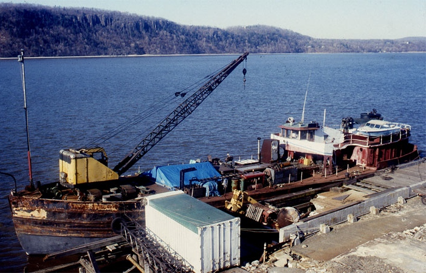
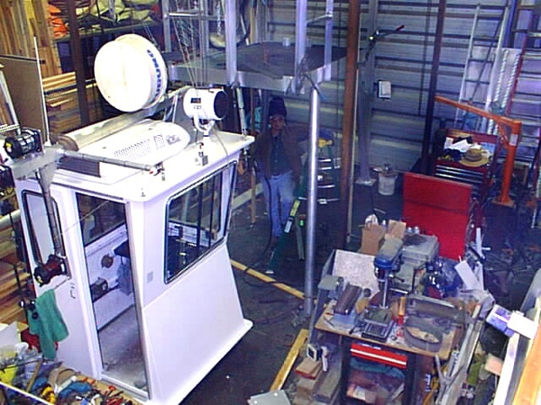
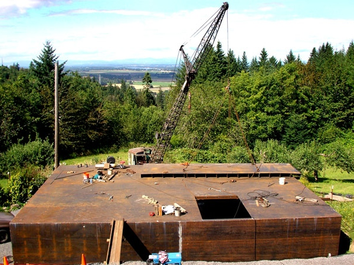
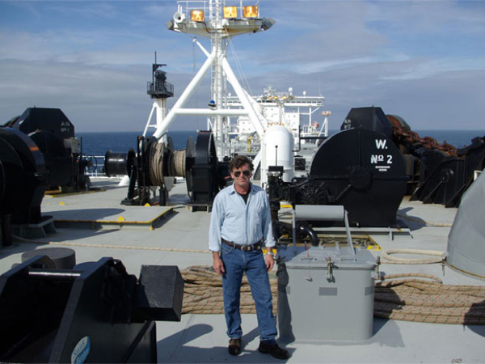
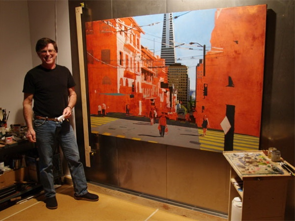
Floating Bales at Industry & Art Portland, OR 2012(photo Casey Parks)"/>
Exhibitions
2014 William Rolland Gallery, CA Lutheran U., Thousand Oaks, CA group show: the Beautiful 2014 Deborah Berke Partners, NY, NY. solo Exhibition: Above & Below2013 Victory Gallery, Portland, OR, solo Exhibition: New York + New Work
2012-2013 PDX Int. Airport Terminal B group show
2012 Industry & Art, Portland, OR. juried group show featured artist
2011 Industry & Art, Portland, OR. juried group show 2nd place
2011 Atlantic Gallery, NY, NY. group show: "Concealment & Disclosure"
2010 PDX Gallery, Portland, OR. group show
2010 Atlantic Gallery, NY, NY. group show: "Water"
2009 Froelick Gallery, Portland, OR. group show "Town & Country"
1991 Trident Chamber of Commerce, Charleston, SC. solo show
1991 Owensboro Mus. of Fine Art, Owensboro, KY group show: S.Carolina Contemporary Images
1990 City Gallery, Charleston, SC. solo show
1990 Gibbes Gallery, Charleston, SC. group show "Charleston's Maritime Heritage"
1989 Gibbes Gallery, Charleston, SC. "Artist and his Style" solo lecture/show
1987 Piccolo Spoleto Charleston, SC. Group invitational show
1985 Nassau Cty. Museum of Fine Art, Roslyn Hbr, NY. group show, "The Tradition in Steel"
1979 Keenlyside Gallery, Vancouver, B.C., Canada. group opening show
1978 N.W. Artist's Workshop Gallery, Portland, OR. two person show
1977 Linfield College, McMinnville, OR. Solo show
1976 C.M. Russell Museum, Great Falls, MT. group juried show
1976 White Gallery, PSU Portland, OR. solo show
1975 Winter Gallery, Portland, OR. solo show
1972 RISD Woods Gerry Gallery, Providence, RI. two person show
1970 Harbor Gallery, Cold Spring Harbor, NY. group show "Young Realists Show"
1968 Nassau County, NY. Arts Festival. group show 3rd place, sculpture
Collections
Sheldon Museum, Lincoln NE, Contemporary American Painting Permanent CollectionPrivate collections:
New York, Port Washington, NY
San Francisco, CA
Charleston, SC
Chicago, IL
Portland, Hood River, Ashland, OR
Vancouver, Canada
Paris, France
Grants and Commisions
1989 Painting Commission, U.S. Navy Charleston, SC1989 Special Project Grant, SC Arts Council
1989 Small Project Grant, Charleston Area Arts Council, Charleston, SC
1983 NJ Humanities Council Film Grant
Collaborations
1976 Film Collaboration: Railroad Turnbridge 19 min B/W (With Richard Serra)Press
4 / 9 / 2013 KBOO Art Focus radio interview9 / 20 / 2012 Oregonian article Portland Oregonian